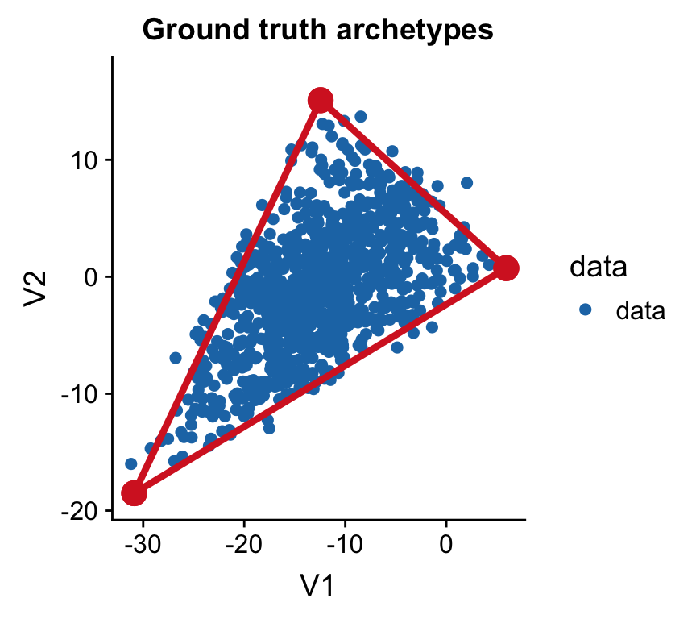
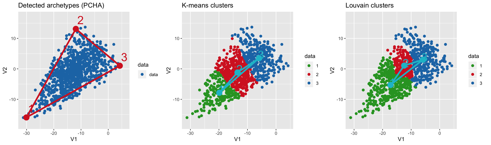
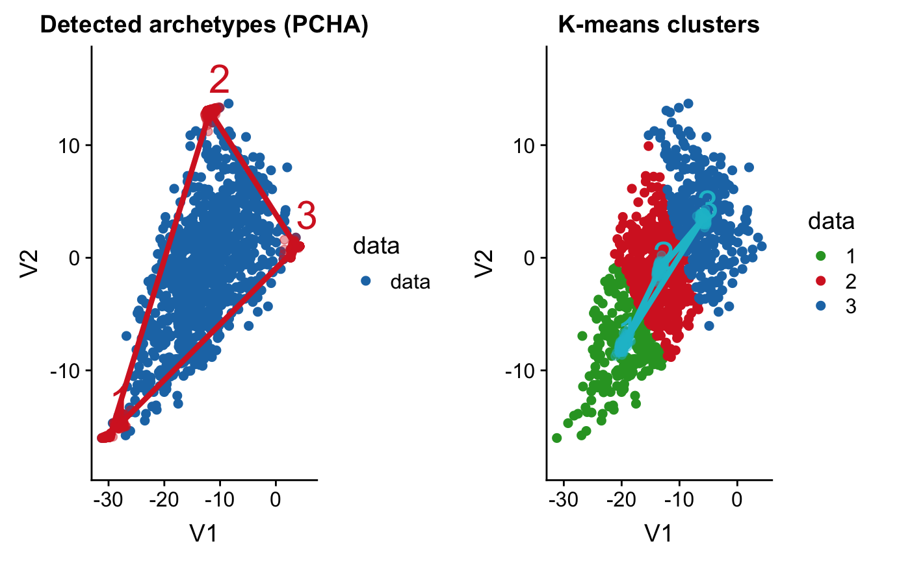
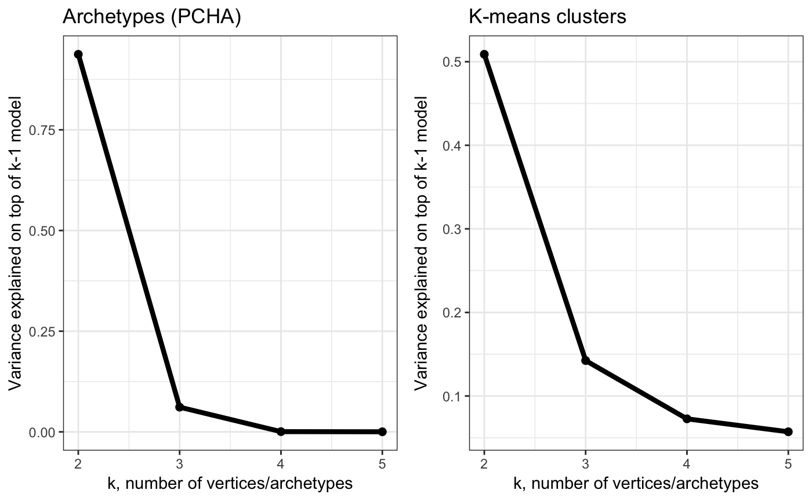
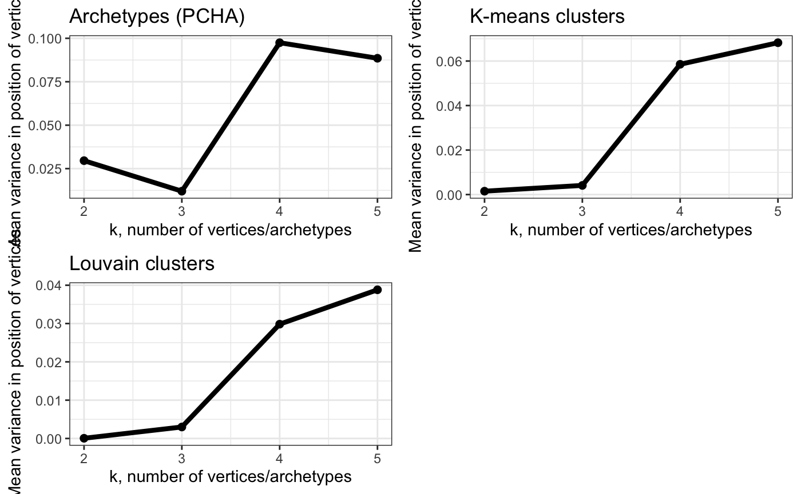

Comparison_to_kmeans.RmdFirst, let’s simulate a triangle in 3D.
# set random seed
set.seed(4355)
# generate archetype positions
archetypes = generate_arc(arc_coord = list(c(5, 0, 4), c(-10, 15, 0), c(-30, -20, -5)),
mean = 0, sd = 1)
# generate 1000 data points that are a convex combination (weighted sum) of archetypes
data = generate_data(archetypes$XC, N_examples = 1e3, jiiter = 0.04, size = 0.99)
colnames(data) = paste0("cell", seq_len(ncol(data)))
# plot
plot_arc(arc_data = archetypes, data = data,
which_dimensions = 1:2) + ylim(-19, 17) +
ggtitle("Ground truth archetypes")
# find archetypes
arc = fit_pch(data, noc = 3)
# find k-means clusters
clusters = fit_pch(data, noc = 3, method = "kmeans")
# find Louvain clusters
lou_clusters = fit_pch(data, method = "louvain",
# use resolution instead of number of clusters
method_options = list(resolution = 0.15)) ## Registered S3 method overwritten by 'R.oo':
## method from
## throw.default R.methodsS3# show both side-by-side
plot_grid(plot_arc(arc_data = arc, data = data,
which_dimensions = 1:2) +
ylim(-18, 17) + ggtitle("Detected archetypes (PCHA)"),
plot_arc(arc_data = clusters, data = data,
which_dimensions = 1:2,
data_lab = as.character(apply(clusters$S, 2, which.max))) +
ylim(-18, 17) + ggtitle("K-means clusters"),
plot_arc(arc_data = lou_clusters, data = data,
which_dimensions = 1:2,
data_lab = as.character(apply(lou_clusters$S, 2, which.max))) +
ylim(-18, 17) + ggtitle("Louvain clusters"),
align = "vh", nrow = 1)
# bootstrap archetypes
arc_rob = fit_pch_bootstrap(data, n = 200, sample_prop = 0.65, seed = 2543,
noc = 3)
# bootstrap kmeans
clusters_rob = fit_pch_bootstrap(data, n = 200, sample_prop = 0.65, seed = 2543,
noc = 3, method = "kmeans")
# bootstrap Louvain
# impossible because number of clusters will be different in each sample at fixed resolution
lou_clusters_rob = fit_pch_bootstrap(data, n = 200, sample_prop = 1, seed = 2543,
method = "louvain",
method_options = list(resolution = 0.12))
# show both side-by-side
plot_grid(plot_arc(arc_data = arc_rob, data = data,
which_dimensions = 1:2) +
ylim(-18, 17) + ggtitle("Detected archetypes (PCHA)"),
plot_arc(arc_data = clusters_rob, data = data,
which_dimensions = 1:2,
data_lab = as.character(apply(clusters$S, 2, which.max))) +
ylim(-18, 17) + ggtitle("K-means clusters"),
plot_arc(arc_data = lou_clusters_rob, data = data,
which_dimensions = 1:2,
data_lab = as.character(apply(lou_clusters$S, 2, which.max))) +
ylim(-18, 17) + ggtitle("Louvain clusters"),
align = "vh")
# trying different number of archetypes
arc_ks = k_fit_pch(data, ks = 2:5,
bootstrap = T, bootstrap_N = 200, maxiter = 500,
bootstrap_type = "m", clust_options = list(cores = 3),
seed = 2543, replace = FALSE,
volume_ratio = "none", # set to "none" if too slow
order_type = "align", sample_prop = 0.65, reference = T)
# trying different number of clusters
cluster_ks = k_fit_pch(data, ks = 2:5,
bootstrap = T, bootstrap_N = 200, maxiter = 500,
bootstrap_type = "m", clust_options = list(cores = 3),
seed = 2543, replace = FALSE,
volume_ratio = "none", # set to "none" if too slow
order_type = "align", sample_prop = 0.65, reference = T, method = "kmeans")
# Show variance explained by k-vertex model on top of k-1 model (each k separately)
plot_grid(plot_arc_var(arc_ks, type = "res_varexpl",
point_size = 2, line_size = 1.5) +
theme_bw() + ggtitle("Archetypes (PCHA)"),
plot_arc_var(cluster_ks, type = "res_varexpl",
point_size = 2, line_size = 1.5) +
theme_bw() + ggtitle("K-means clusters"),
align = "vh")
# Show variance in position of vertices obtained using bootstraping
# - use this to find largest k that has low variance
plot_grid(plot_arc_var(arc_ks, type = "total_var",
point_size = 2, line_size = 1.5) +
theme_bw() + ylab("Mean variance in position of vertices") +
ggtitle("Archetypes (PCHA)"),
plot_arc_var(cluster_ks, type = "total_var",
point_size = 2, line_size = 1.5) +
theme_bw() + ylab("Mean variance in position of vertices") +
ggtitle("K-means clusters"),
align = "vh")